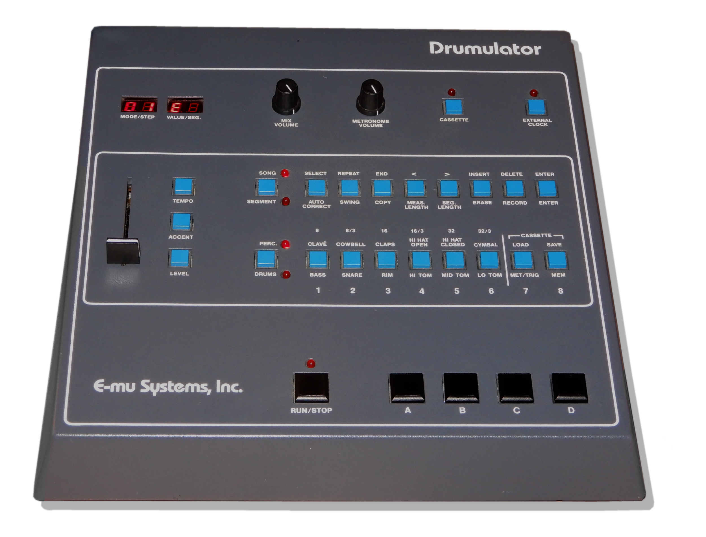
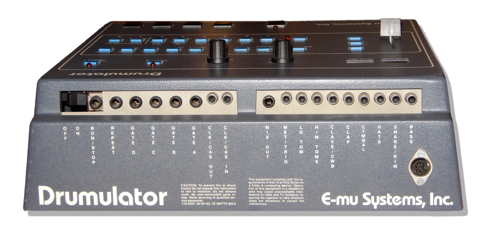

1983
E-mu Systems
E-mu Drumulator
The first sampled drum machine under $1,000 — the mass-market cut-down of the studio pad machine

Overview
Deep dive
Media

The first sampled drum machine under $1,000 — the mass-market cut-down of the studio pad machine

